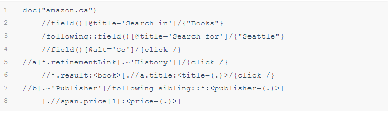

Using OXPath: Navigating Amazon
Let's see another example showing how OXPath extract books on Amazon by a sequence of actions
Actions
- Select “Books” from the “Search in” select box,
- Enter “Seattle” into the “Search for” text field,
- Press the “Go” button to start the search.
- On the returned page, Refine the search to only “History” books
- Open the details page for retrieving further details.
Code
Walkthrough the code line by line
Line 2: //field()[@title='Search in']/{"Books"} - Select “Books” from the “Search in” select box
Line 3: /following::field()[@title='Search for']/{"Seattle"} - Enter “Seattle” into the “Search for” text field
Line 4: //field()[@alt='Go']/{click /} - Press the “Go” button to start the search.
Line 5: //a[*.refinementLink[.~'History']]/{click /} - On the returned page, Refine the search to only “History” books
Line 6: //*.result:<book>[.//a.title:<title=(.)>/{click /} - Open the details page
Line 7 & 8: //b[.~'Publisher']/following-sibling::*:<publisher=(.)>]
[.//span.price[1]:<price=(.)>.code] - Retrieve the Publisher and price details
All these actions can be done in 8 lines of OXPath code